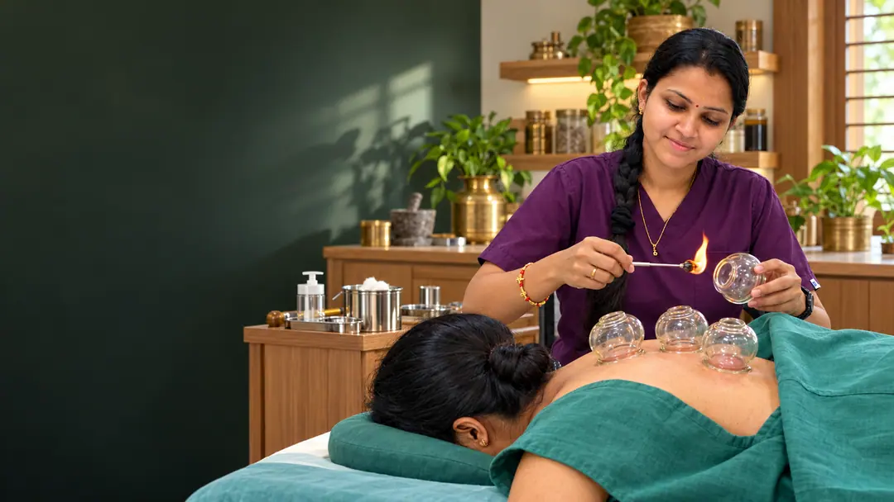
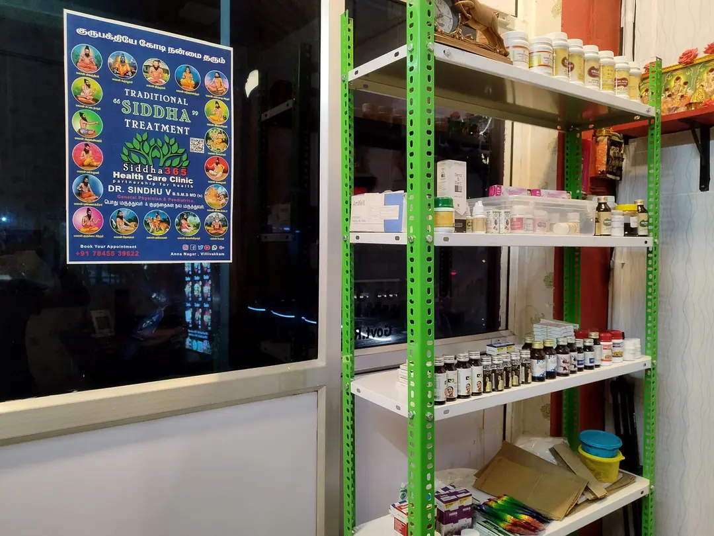

Traditional Siddha care · Chennai
Thoughtful care, rooted in tradition
Meet Dr. Sindhu and explore personal care at Siddha365 Health Care Clinic.
Dr. Sindhu V. · BSMS, MD (Siddha)Two locations in Chennai
Siddha 365 Health Care
Traditional care rooted in Tamil Siddha
பாரம்பரிய சித்த மருத்துவத்தின் மூலம் முழுமையான இயற்கை சிகிச்சை.
Siddha365 Health Care Clinic is guided by Dr. Sindhu V., B.S.M.S., M.D. (Siddha). Rooted in Tamil Siddha tradition, the clinic offers individual consultations with careful assessment, a respectful conversation about each person’s needs, and clear next steps.
Specialized care by Dr. Sindhu V
Find care that speaks to you.
Choose an area to explore helpful guides and your next step.
 Individual care. Clear next steps.
Individual care. Clear next steps.Women’s Health Care
Care through different stages of life
Explore guides to fertility and menstrual health, and prepare for a conversation about your needs.
Talk to the clinic Individual care. Clear next steps.
Individual care. Clear next steps.Skin & Hair
Start with understanding your concern
Find information about skin, hair and foot concerns, with guidance on assessment and next steps.
Talk to the clinic Individual care. Clear next steps.
Individual care. Clear next steps.Joints & Cupping Therapy
Explore comfort, movement and care
Read about joint concerns and traditional therapies, including what to discuss with your clinician.
Talk to the clinic Individual care. Clear next steps.
Individual care. Clear next steps.Family & Child Care
Information for everyday health questions
Browse care guides for ongoing concerns and learn when individual assessment or specialist care is needed.
Talk to the clinicEvery person is different. An individual consultation helps determine the right next step.

Watch & learn
From the Siddha365 YouTube channel
Scroll through clinic videos and health conversations. Select a video to play it here.
Fallopian tube health (Tamil)
Clinic care and guidance
Siddha health and wellbeing
Patient feedback
Words from our Google reviewers
Patient experiences from the clinic’s Google review feed. Select a card to read the full review.

Patient experiences, in their own words
Reviews will appear here when the clinic’s Google review feed connects.
Connecting to the clinic’s Google review feed…
Siddha tradition
Concept of Vatham, Pitham & Kabam
Siddha tradition describes Vatham, Pitham, and Kabam as three principles used to discuss balance in health. This historical framework is part of Siddha practice; it does not replace medical testing or an individual clinical diagnosis.

Founder & Chief Siddha Consultant
Dr. Sindhu V.
Dr. Sindhu V., B.S.M.S., M.D. (Siddha), H.A.H.M., Dip. Cupp., is the Founder and Chief Siddha Consultant at Siddha365 Health Care Clinic. Her practice is guided by Siddha knowledge, clinical assessment, and patient-centred conversations.
- Women’s health, fertility, and family care
- Skin, hair, joint, and lifestyle concerns
- Traditional therapies discussed as part of an individual plan
Make your visit easier
A little preparation.
A clearer conversation.
Keep your questions ready and contact the clinic before you travel.
Plan your visitBring what matters
Your previous reports, current medicine list and questions for the clinician.